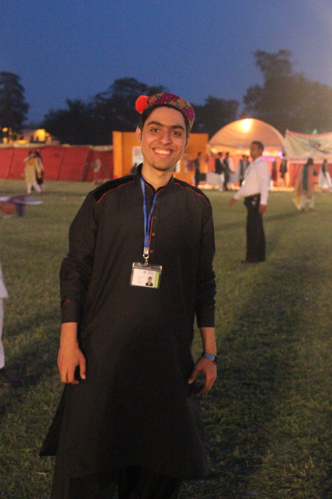

Visit Lahore
Explore Historic Monuments and get to eat Local Cusines
Top three places to vist in Lahore

Badshai Mosque
The Badshahi Mosque was constructed by the Mughal emperor Aurangzeb between 1671 and 1673.

Lahore Museum
The Lahore Museum seeks to educate its visitors about Pakistan’s deep and diverse histories through its collection which spans the pre-historic period to the present day.

Food Street
The Fort Road Food Street is known for traditional Lahori cuisines with a view of the Mughal era Badshahi Mosque. The building itself that the street is based on was built during the era of the Mughal Empire and the British Rule.
Your guide
"I have lived in Lahore for over 20 years, so I can show you all of its best parts and hidden secrets."
Mir Umar
Book a tour
